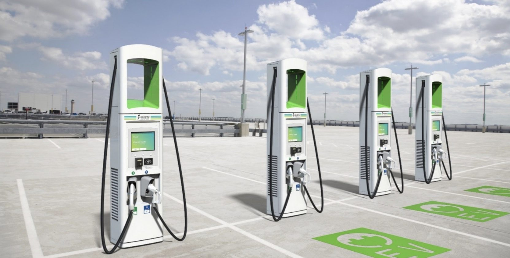

Укргазбанк та Енергоатом підписали 17 червня меморандум зі створення в
Україні національної мережі електричних зарядних станцій
Відповідно до підписаного документу, сторони домовились розпочати спільну
реалізацію проєкту з використанням фінансових можливостей Укргазбанку
та
виробничо-технічного потенціалу Енергоатома як найбільшого виробника
електричної енергії в Україні. «Сьогодні зроблений ще один важливий
крок
розвитку інфраструктури електричного транспорту та створення національної
мережі зарядних станцій в Україні, визначені джерела фінансування для
розбудови цієї мережі на території всієї країни», - зазначив міністр
енергетики України Герман Галущенко під час підписання документу. За
його
словами, реалізація цього проєкту також сприяє виконанню Україною
міжнародних зобов’язань щодо декарбонізації: «Ми пришвидшуємо
досягнення
вуглецевої нейтральності економіки України, а також зменшення забруднення
навколишнього природного середовища».
Вторая часть статьи
